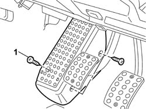
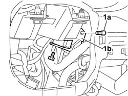
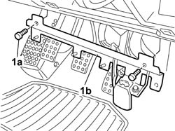
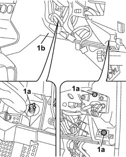
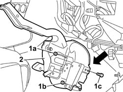

3330B42 pedal unit mount - r rfor right hand drive versions
- Path
- Procedures > 33 BRAKING SYSTEM > 3330 HYDRAULIC BRAKING SYSTEM > 3330B pedal unit > 3330B42 pedal unit mount - r rfor right hand drive versions
- Kind
- repair procedure (removal / refitting; the operation number is the code)
- Applies to
- engines: 3.2 V6; all production periods
- Interactive page
- https://sloeber94.github.io/elrnDB-a156/en/#/3238066
Applies to: engines: 3.2 V6; all production periods
 Removing
Removing
 Refitting
RefittingEnsure that the ignition key is in the OFF position, then disconnect the negative battery terminal (-).
 | Name | Connector |
|---|---|---|
- | Battery |
4110A11 steering wheel - r+r for replacement or check for versions with air bag
7040A26 steering column trim - r+r
5550A12 complete stalk unit - r+r for versions with air bag
5520A12 ignition switch assembly - r r for versions with air bag
4110A30 Steering control shaft SUPPORT - R.R.
5505A10 front beam wiring - r r
1. Unscrew the retaining bolt and remove the driver's side footrest

Applies to: engines: 3.2 V6; all production periods
1. Unscrew bolts (1a) securing the underfacia relay carrier bracket (1b) and place to one side.

Applies to: engines: 3.2 V6; all production periods
1. Unscrew bolts (1a) and place support (1b) with bonnet lid opening lever to one side without disconnecting the control cable.

Applies to: engines: 3.2 V6; all production periods
1068A20 accelerator pedal with built-in potentiometer - r r
3330B27 clutch pedal - r r for rhd versions
3330B23 brake pedal - r r for rhd versions
7040A45 facia rh side cover - r r
Remove the clutch pedal switch from its seat without disconnecting the electrical connection.
1. Unscrew the side bolts (1a) securing facia (1b) to allow pedal support removal.

Applies to: engines: 3.2 V6; all production periods
1. Unscrew nuts (1a) securing the pedal mount to the brake servo and nuts (1b) and bolt (1c) securing the pedal unit to the body.
2. Remove the pedal mount.

Applies to: engines: 3.2 V6; all production periods
Refitting
RemovingPosition the pedal mount by fitting to the brake servo studs.
Secure the pedal mount to the body by means of the nuts and side bolt.
 | Fastening | Component | Ø | Value (daNm) |
|---|---|---|---|---|
- | Nut | PEDAL MOUNT | M8 | (to bodyshell) 1.5 |
| Fastening | Component | Ø | Value (daNm) |
|---|---|---|---|---|
- | Bolt | PEDAL MOUNT | M8 | (to bodyshell) 2.6 |
Tighten the nuts securing the strut to the brake servo to the pedal mount.
Tighten the facia side bolts to the recommended torque.
| Fastening | Component | Ø | Value (daNm) |
|---|---|---|---|---|
- | Bolt | TOP INSTRUMENT FACIA LINING | M10 x 1.25 | 3.6 |
Position the brake pedal switch in its seat.
3330B23 brake pedal - r r for rhd versions
3330B27 clutch pedal - r r for rhd versions
1068A20 accelerator pedal with built-in potentiometer - r r
7040A45 facia rh side cover - r r
Position the mount with bonnet lid opening lever and secure with bolts.
Position the underfacia relay bracket and secure with bolts.
Position the driver's side foot rest and secure with bolts.
5505A10 electrical junction unit - r+r
4110A30 Steering control shaft SUPPORT - R.R.
5520A12 ignition switch assembly - r r for versions with air bag
5550A12 complete stalk unit - r+r for versions with air bag
7040A26 steering column trim - r+r
4110A11 steering wheel - r+r for replacement or check for versions with air bag
Connect the negative (-) battery terminal.
| Name | Connector |
|---|---|---|
- | Battery |
Topics linked from this page (14)
- 1068A20 accelerator pedal with built-in potentiometer - r r
- 3330B23 brake pedal - r r for rhd versions
- 3330B27 clutch pedal - r r for rhd versions
- 4110A11 steering wheel - r+r for replacement or check for versions with air bag
- 4110A30 Steering control shaft SUPPORT - R.R.
- 5505A10 electrical junction unit - r+r
- 5505A10 front beam wiring - r r
- 5520A12 ignition switch assembly - r r for versions with air bag
- 5550A12 complete stalk unit - r+r for versions with air bag
- 5580C18 air bag module - r+r
- 7040A26 steering column trim - r+r
- 7040A37 fuse box cover - r r
- 7040A45 facia rh side cover - r r
- A1B Battery ( BATTERY NEGATIVE )